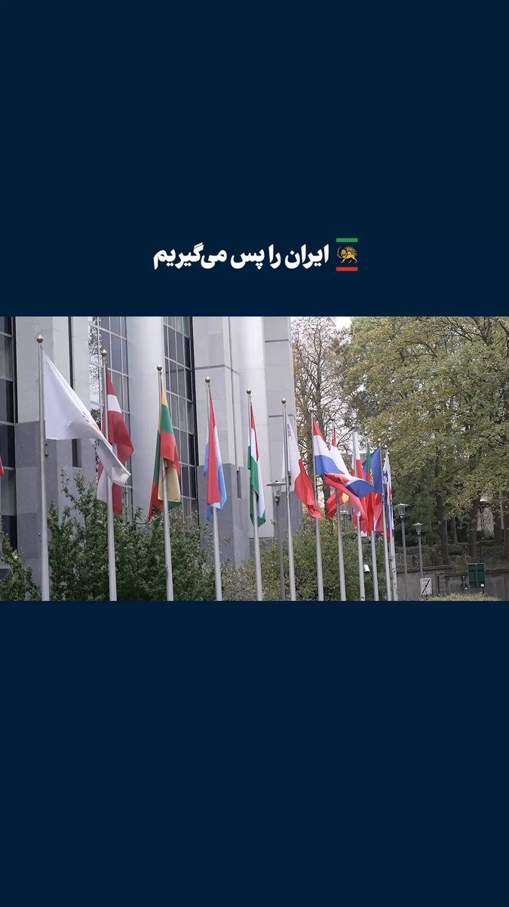

Världen
Delvis obekräftatReza Pahlavi i EU-parlamentet samma dag som Iran avrättade två unga demonstranter från januari

Irans exilerade kronprins Reza Pahlavi besökte på tisdagen Europaparlamentet i Bryssel och uppmanade EU att sluta med eftergiftspolitiken mot Teheran. Samma dag meddelade iranska statsmedier att två män som greps under januariprotesterna i Isfahan har avrättats, anklagade för att ha dödat fyra poliser. Människorättsgrupper säger att fler i samma mål riskerar att avrättas snart. Besöket hyllas av en del ledamöter och kritiseras av andra iranska exilgrupper.
Pahlavi i Bryssel: "sluta med eftergifterna"
Reza Pahlavi, son till Irans siste shah och en av de mest kända rösterna i den iranska exiloppositionen, kom på tisdagen till Europaparlamentet. Hans pressteam delade bilder från ankomsten, och den nederländske ledamoten Sander Smit från den konservativa ECR-gruppen hälsade honom välkommen. Budskapet är att EU ska sluta med det Pahlavi kallar eftergiftspolitik mot regimen i Teheran.
Enligt X:s sammanfattning av hans framträdande lade han fram fem konkreta steg, bland annat stöd för fri internettillgång i Iran och att utvisa regimens diplomater. Ett anhängarkonto återger att han på onsdagen håller en gemensam presskonferens med den franske Europaparlamentarikern François-Xavier Bellamy.
Alla i exiloppositionen är inte glada. En kritiker skriver att Europaparlamentet inte får bli en scen för Pahlavi och sprider hashtaggen #No2Pahlavi. Striden speglar en gammal splittring mellan monarkister, vänstergrupper och etniska minoriteters organisationer om vem som ska företräda ett Iran efter regimen.
Två avrättade i Isfahan-målet
Samma morgon meddelade iranska statsmedier att två män som greps under protesterna i januari har avrättats. Enligt kurdiska Rudaw anklagades de för att ha dödat fyra poliser under oroligheterna i Isfahan. Avrättningarna ska ha skett i fängelset Dastgerd, och målet gäller händelser vid Alikhani-torget. Redan kvällen innan rapporterade Iran International, med hänvisning till Iran Human Rights i Norge, att familjerna kallats till ett sista besök.
Uppgifterna om vilka männen var går delvis isär. Den ene kallas Maleki i flera källor. Den andre anges i vissa inlägg som Amirhossein och i andra som Abolfazl Ebrahimi, och hans ålder uppges till 18 eller 20 år. En källa säger till Iran International att Maleki utsattes för en skenavrättning efter att han tagit tillbaka ett erkännande som han sa hade tvingats fram med tortyr. Den uppgiften har bara en källa och är obekräftad.
Människorättsgruppen Iran HRM säger att nio åtalade nu avrättats och att tre till riskerar att avrättas inom kort. Exilkanalen Simay Azadi uppger att tolv personer dömts till döden i målet. Iranska myndigheter har inte bekräftat de siffrorna.
Varför det spelar roll
Avrättningarna och Pahlavis besök hamnade på samma dag, och hans anhängare använder dem som argument för en hårdare EU-linje. Samtidigt är spänningen mellan Iran och USA hög efter uppgifterna om nedskjutna drönare vid Hormuzsundet. Hur EU-parlamentet svarar, och om presskonferensen på onsdagen leder till konkreta förslag, är nästa sak att följa.
Så vet vi det
Källmix: 10 källor – 2 primärkälla, 1 expert, 1 analys, 3 journalist, 1 etablerad media, 2 debattör. Etablerad media utgör 1 av 10.
- Primärkälla Pahlavis pressteam: ankomsten till Europaparlamentet
- Primärkälla Sander Smit, Europaparlamentariker (ECR): välkomnar Pahlavi
- Debattör Anhängarkonto återger Pahlavi om presskonferensen med F-X Bellamy
- Debattör Kritiker: parlamentet får inte bli en scen för Pahlavi
- Analys X:s sammanfattning av Pahlavis fem förslag till EU
- Etablerad media Rudaw: statsmedier om avrättningarna i Isfahan
- Journalist Iran International: källa om skenavrättning av Maleki
- Journalist Iran International: familjerna kallades till sista besök
- Expert Iran Human Rights Monitor: nio avrättade, tre till hotas
- Journalist Simay Azadi TV: tolv dödsdomar i målet
Att två män avrättades bygger på iranska statsmedier som de återges av Rudaw och flera iranska exilmedier. Uppgifterna om den ene mannens namn och ålder skiljer sig åt mellan källorna (han kallas Amirhossein eller Abolfazl Ebrahimi och anges vara 18 eller 20 år). Uppgiften om att Maleki utsattes för en skenavrättning efter att ha tagit tillbaka ett erkännande kommer från en enda källa via Iran International och är obekräftad. Antalet avrättade och dödsdömda i målet kommer från människorättsgrupper och exilmedier och har inte bekräftats av iranska myndigheter. Vad Pahlavi säger i parlamentet bygger på hans eget pressteam och anhängare.
Fördjupa
Frågorna öppnar Grok i en ny flik med artikeln som underlag. AI-svar kan innehålla fel, så kontrollera mot källorna.
- Vem är Reza Pahlavi och hur stort stöd har han inne i Iran? ↗
- Vad hände under januariprotesterna i Isfahan? ↗
- Varför är oppositionen i exil så splittrad om Pahlavi? ↗
- Vad kan EU konkret göra mot Irans regim, till exempel med sanktioner eller utvisningar av diplomater? ↗
- Hur fungerar rättegångarna mot demonstranter i Iran? ↗
- Hänger avrättningarna ihop med spänningarna mellan Iran, Israel och USA? ↗
Läs vidare
Uppdateringslogg
- 18:18 – Artikeln publicerad.